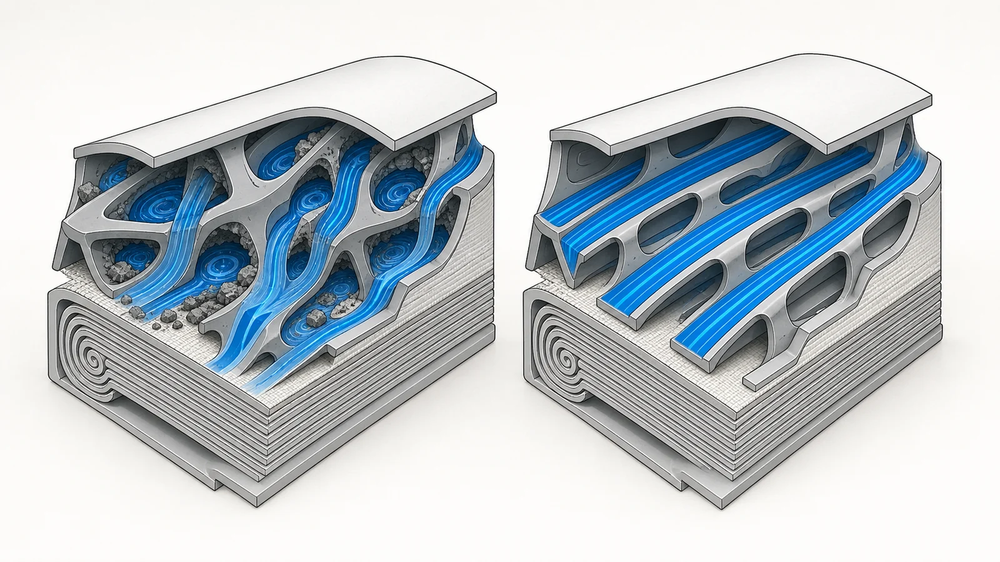
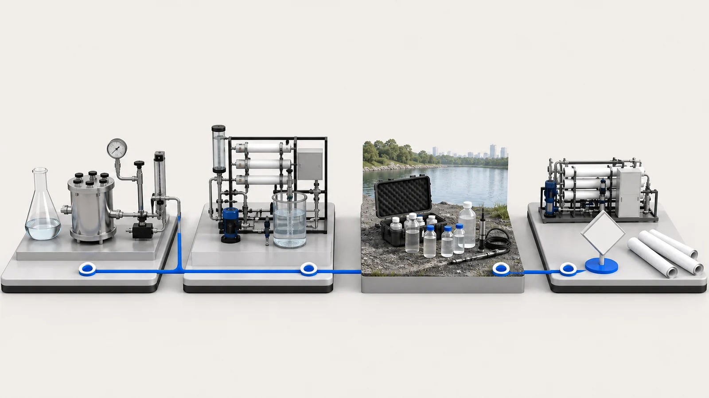
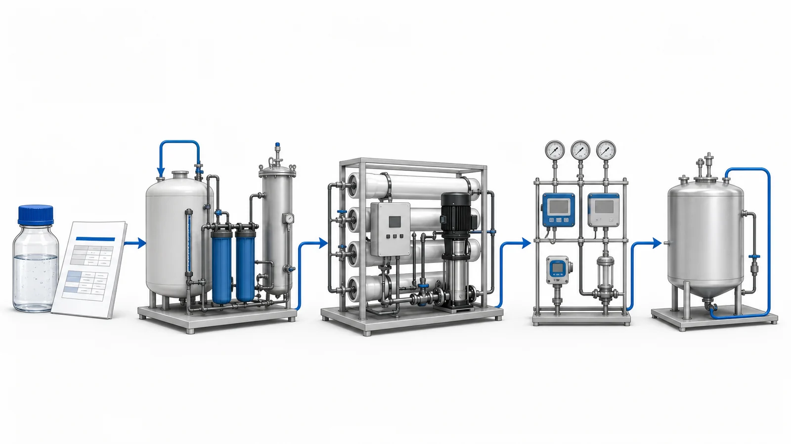

Câu trả lời trực tiếp
Vontron PURO-ULD là phần tử màng thẩm thấu ngược chống bám bẩn được giới thiệu cho các dòng nước có xu hướng gây bám bẩn sinh học và bám bẩn hữu cơ. Trọng tâm kỹ thuật của sản phẩm không phải là cam kết áp dụng cho mọi trường hợp rằng bám bẩn sẽ biến mất. Giá trị thực tế nằm ở định hướng thiết kế kênh nước cấp có sức cản thấp hơn, nhằm hạn chế sự gia tăng chênh áp và hỗ trợ phục hồi nhờ làm sạch trong điều kiện khó khăn. Một quyết định phù hợp cho dự án vẫn phải bắt đầu từ báo cáo về nước hoặc chất lỏng công nghệ, các rủi ro liên quan đến tiền xử lý, mục tiêu sản xuất và phạm vi vận hành. Yuchen Water có thể hỗ trợ tìm nguồn cung màng và đánh giá thiết bị liên quan, nhưng không chốt lựa chọn vật liệu hoặc kết quả của hệ thống chỉ dựa trên tên sản phẩm.
Vì sao các dự án RO chống bám bẩn liên quan đến cả vấn đề thủy lực lẫn vấn đề hóa học
Nước thải công nghiệp hiếm khi có đặc tính như một dung dịch muối ổn định. Các dòng thải từ ngành hóa dầu, thép, hóa chất từ than, chế biến thực phẩm và các dòng thải hỗn hợp từ nhà máy có thể có những tổ hợp biến động về muối, độ cứng, silica, hạt, dầu, chất hoạt động bề mặt, chất hữu cơ và hoạt động sinh học. Hoạt động sản xuất và làm sạch có thể làm thay đổi nước cấp ngay trong cùng một ngày, ảnh hưởng đến cả bề mặt màng và các kênh nước cấp hẹp bên trong phần tử RO.
Khi cặn lắng, sinh khối hoặc chất hữu cơ làm hẹp các kênh này, sức cản thủy lực tăng lên. Người vận hành có thể thấy chênh áp giữa nước cấp và nước cô đặc tăng, áp suất nước cấp cần thiết cao hơn, dòng chảy không đều hoặc phải làm sạch thường xuyên hơn. Chênh áp là tín hiệu hữu ích, nhưng tự nó không xác định được tác nhân bám bẩn. Cần xem xét chỉ số này cùng với lưu lượng nước thấm đã chuẩn hóa, tỷ lệ muối đi qua màng, nhiệt độ, độ dẫn điện, áp suất các cấp và hồ sơ làm sạch.
Chống bám bẩn không có nghĩa là không cần bảo trì và cũng không thay thế tiền xử lý. Thuật ngữ này mô tả các lựa chọn thiết kế nhằm giảm một số tác động của bám bẩn trong phạm vi vận hành xác định. Hệ thống vẫn phải kiểm soát dầu, chất rắn lơ lửng, các ion tạo cáu cặn, chất oxy hóa và nguy cơ sinh học.

Điểm mới trong định hướng thiết kế PURO-ULD
Vontron phát triển dòng PURO cho các ứng dụng tái sử dụng nước và nước công nghệ có điều kiện khó khăn. Các thế hệ trước kết hợp khả năng chịu được quá trình làm sạch, thay đổi lưới đệm kênh nước cấp và cải tiến phân bố dòng chảy. PURO-ULD tiếp tục định hướng đó với khái niệm kênh nước cấp có chênh áp siêu thấp cho các dòng nước có xu hướng gây bám bẩn sinh học và bám bẩn hữu cơ.
Đường dẫn có phân bố dòng chảy đồng đều hơn có thể giảm dòng tuần hoàn cục bộ và các vùng tù đọng nơi vật chất tích tụ. Thiết kế này cũng có thể hạn chế phân cực nồng độ cục bộ gần bề mặt màng. Điều này giải thích vì sao hình học của lưới đệm kênh nước cấp có thể ảnh hưởng đến sự gia tăng chênh áp và khả năng làm sạch, dù đặc tính hóa học của màng chỉ là một phần của dây chuyền.
Thiết kế kênh vẫn phải được đánh giá cùng với bình áp lực, tải vận hành của phần tử màng và hệ thống làm sạch. Thiết kế này không thể khắc phục thiết kế ống góp kém, lưu lượng nước cấp quá lớn, súc xả không đầy đủ hoặc nước cấp vượt giới hạn cho phép. Vì vậy, PURO-ULD là một thành phần trong quy trình đánh giá dựa trên báo cáo, không phải giải pháp khắc phục một vấn đề chưa được xác định.
Cách đọc dữ liệu PURO-ULD đã công bố
Các giá trị sau được chép lại từ bản công bố kỹ thuật PURO-ULD của Vontron. Chúng mô tả dữ liệu phần tử màng được công bố theo các điều kiện thử nghiệm đã nêu; chúng không phải là dự báo hiệu quả vận hành tại hiện trường.
| Diện tích màng hiệu dụng | 400 ft² |
|---|---|
| Ký hiệu lưới đệm kênh nước cấp | ULD |
| Lưu lượng nước thấm | 10,500 gpd (39.7 m³/d) |
| Tỷ lệ loại bỏ muối | 99.6% |
| Giá trị ΔP2 đã công bố | 0.10 bar |
Các điều kiện thử nghiệm tiêu chuẩn đã công bố:
- Áp suất nước cấp: 225 psi (15.5 bar)
- Dung dịch cấp: 2,000 mg/L NaCl
- Nhiệt độ: 25°C
- pH: 7 ± 0.5
- Tỷ lệ thu hồi của một phần tử màng: 15%
- Dung sai lưu lượng nước thấm của một phần tử màng đã công bố: ±20%
- Điều kiện ΔP2 đã công bố tại lưu lượng nước cấp trung bình: 11 m³/h
Thử nghiệm NaCl tiêu chuẩn hữu ích cho việc xác định đặc tính và so sánh sản phẩm. Nước thải công nghiệp thực tế chứa một hỗn hợp ion, chất hữu cơ, hạt và vi sinh vật khác, thường có nhiệt độ và pH biến động. Vì vậy, không thể áp dụng trực tiếp lưu lượng nước thấm, tỷ lệ loại bỏ và giá trị chênh áp được liệt kê để cam kết bảo đảm sản lượng của nhà máy.
Phép so sánh chênh áp được báo cáo chứng minh và không chứng minh những gì
Vontron chính thức báo cáo rằng, trong phép so sánh bám bẩn và làm sạch theo các điều kiện do hãng nêu, chênh áp giữa các cấp của PURO-ULD thấp hơn tới 50% so với PURO-I. Phép so sánh sử dụng lưu lượng nước cấp trung bình 9 m³/h và ba chu kỳ bám bẩn và làm sạch. Vontron cũng báo cáo rằng chênh áp duy trì tương đối thấp qua các chu kỳ đó và phục hồi tốt sau làm sạch trong điều kiện so sánh.
Các cụm từ “tới” và “trong các điều kiện so sánh đã nêu” là thiết yếu. Kết quả này là bằng chứng thử nghiệm do nhà sản xuất báo cáo, không phải bảo đảm độc lập về kết quả tại hiện trường. Kết quả không chứng minh rằng mọi cơ sở sẽ tiêu thụ ít hơn 50% năng lượng, có tần suất làm sạch thấp hơn 50% hoặc đạt một tuổi thọ sử dụng cụ thể. Đặc tính vận hành tại hiện trường phụ thuộc vào thành phần nước cấp, độ ổn định của tiền xử lý, thiết kế bố trí màng, tỷ lệ thu hồi, nhiệt độ, ngưỡng kích hoạt làm sạch, chương trình sử dụng hóa chất và việc kiểm soát của người vận hành. Với dòng chất lỏng phức tạp hoặc có giá trị cao, thử nghiệm pilot hoặc kiểm chứng theo từng giai đoạn vẫn có thể phù hợp.
Giới hạn của bằng chứng: phép so sánh do nhà sản xuất báo cáo tại 9 m³/h qua ba chu kỳ bám bẩn và làm sạch; không phải kết quả áp dụng chung cho mọi cơ sở.

Cách xem xét PURO-ULD kết hợp với hỗ trợ thiết bị của Yuchen Water
Một cuộc trao đổi hiệu quả về thiết bị cần gắn màng với các điều kiện quyết định liệu kênh dòng chảy của màng có thể tiếp tục hoạt động được hay không. Yuchen Water đánh giá đồng thời các hạng mục hệ thống sau:
1. Xác định đặc tính và ổn định nước cấp
Xác định nguồn nước thải, đặc tính hóa học ở điều kiện bình thường và cao điểm, các hoạt động làm sạch, hiệu quả điều hòa và việc phối trộn. Một mẫu lấy tức thời có thể không đủ khi quy trình thay đổi theo ca hoặc mẻ.
2. Lựa chọn tiền xử lý phù hợp với các rủi ro đã xác định qua đo lường
Tách dầu, làm trong, lọc qua vật liệu, UF, kiểm soát sinh học, than hoạt tính, làm mềm, châm hóa chất và lọc lõi là những biện pháp có thể sử dụng, không phải danh sách áp dụng chung cho mọi trường hợp. Lớp vật liệu than hoạt tính không được quản lý có thể gây nguy cơ sinh học hoặc nguy cơ do hạt, và mọi hóa chất tiếp xúc với RO đều cần được đánh giá tính tương thích.
3. Thiết lập phạm vi vận hành thủy lực của RO
Xác nhận cách bố trí bình áp lực, số lượng phần tử màng, cách bố trí các cấp, các lưu lượng, đường đặc tính bơm, tỷ lệ thu hồi, thành phần hóa học của nước cô đặc và lưu lượng dòng chảy chéo tối thiểu. Giám sát áp suất nước cấp, áp suất giữa các cấp và áp suất nước cô đặc cùng với lưu lượng nước thấm, độ dẫn điện và nhiệt độ để luôn theo dõi được các xu hướng đã chuẩn hóa.
4. Lập kế hoạch súc xả, CIP và ứng phó trong vận hành
Xác định quy trình súc xả khi dừng máy, các ngưỡng kích hoạt làm sạch, giới hạn hóa chất và nhiệt độ, lưu lượng tuần hoàn và trình tự ngâm. Việc làm sạch nên dựa trên các xu hướng đã được xác minh và loại tác nhân bám bẩn có khả năng hiện diện; chờ đến khi tắc nghẽn nghiêm trọng có thể làm giảm khả năng phục hồi đặc tính thủy lực.

Vì sao 500, 1,000, 2,000 hoặc 3,000 LPH chỉ là điểm khởi đầu
Yêu cầu 500, 1,000, 2,000 hoặc 3,000 LPH mô tả lưu lượng nước thấm mong muốn, không phải cấu hình bố trí màng cuối cùng. Nhiệt độ, tỷ lệ thu hồi, thông lượng thiết kế, số giờ vận hành, nhu cầu cao điểm, phần dự trù cho việc làm sạch, mức dự phòng và chất lượng nước mục tiêu cũng quan trọng. Một hệ thống 1,000 LPH vận hành tám giờ có yêu cầu trữ nước khác với hệ thống vận hành liên tục.
Trong các hệ thống lớn hơn, cách bố trí các cấp và tải vận hành của bình áp lực trở nên quan trọng hơn vì nước cấp ở cấp đầu và nước cô đặc ở cấp cuối có điều kiện khác nhau. Yuchen Water có thể trao đổi về tiền xử lý, vật liệu màng, bình áp lực, bơm, điều khiển, CIP và hỗ trợ chạy thử sau khi xem xét đồng thời báo cáo và mục tiêu sản xuất.
Cần gửi những gì trước khi nhận khuyến nghị kỹ thuật
Cung cấp dữ liệu mang tính đại diện từ nước cấp RO thực tế hoặc xác định rõ vị trí lấy mẫu. Nếu chỉ có dữ liệu chưa đầy đủ, Yuchen Water có thể đưa ra các câu hỏi sàng lọc sơ bộ, chứ không đưa ra cam kết cuối cùng về vật liệu hoặc hiệu quả vận hành.
- Nguồn gốc dòng chất lỏng, lịch sản xuất và các dòng xả từ hoạt động làm sạch đã biết
- Lưu lượng bình thường và cao điểm, lưu lượng nước thấm yêu cầu tính bằng LPH và thời gian vận hành hằng ngày
- Các khoảng độ dẫn điện, TDS, pH và nhiệt độ
- COD, TOC, dầu, chất hoạt động bề mặt, màu và các chất hữu cơ có liên quan
- Độ đục, TSS, SDI khi chỉ số này có ý nghĩa đánh giá, và thông tin về hạt hoặc chất keo
- Các chỉ tiêu vi sinh và lịch sử sử dụng chất diệt sinh vật
- Độ cứng, độ kiềm, silica, sắt, mangan, kim loại và các ion chính
- Clo tự do, chloramine, các chất oxy hóa khác, dung môi và hóa chất công nghệ
- Tiền xử lý hiện có, lịch sử sử dụng bộ lọc, dữ liệu màng và hồ sơ làm sạch
- Chất lượng nước thấm mục tiêu, mục tiêu tỷ lệ thu hồi, các giới hạn đối với nước cô đặc và diện tích bố trí sẵn có
Những sai sót thường gặp khi xác định thông số kỹ thuật
- Lựa chọn PURO-ULD chỉ dựa trên COD hoặc TDS mà không xác định cơ chế gây bám bẩn thực tế
- Coi thiết kế có chênh lệch áp suất thấp hơn là cơ sở cho phép tăng tỷ lệ thu hồi hoặc lưu lượng nước cấp mà không tính toán
- Dùng lưu lượng nước thấm qua màng được công bố khi thử nghiệm với NaCl làm sản lượng được bảo đảm của nhà máy xử lý nước thải công nghiệp
- Diễn giải kết quả so sánh được báo cáo ở mức lên đến 50% thành mức tiết kiệm áp dụng cho mọi trường hợp về năng lượng, việc làm sạch hoặc tuổi thọ sử dụng
- Bỏ qua việc tiếp xúc với chất oxy hóa, hóa chất làm sạch, các đợt dừng vận hành, biến động đột ngột của nước cấp hoặc đóng cặn ở phía nước cô đặc
Giới hạn phạm vi cung ứng và hỗ trợ kỹ thuật
Yuchen Water hỗ trợ tìm nguồn cung màng Vontron và hỗ trợ kỹ thuật liên quan đến vỏ màng, thiết bị lọc, bơm, hệ thống điều khiển và thiết bị công nghiệp. Đội ngũ có thể xem xét báo cáo, xác định dữ liệu còn thiếu và lựa chọn hướng hỗ trợ thiết bị phù hợp với yêu cầu vận hành. Yuchen Water không phải là nhà sản xuất màng Vontron.
Việc xem xét kỹ thuật không thay thế công tác kỹ thuật dự án, kiểm chứng ở quy mô thí điểm hoặc đánh giá bắt buộc theo quy định. Trước khi xem xét báo cáo, Yuchen Water không cam kết về tính phù hợp của màng, thông lượng, tỷ lệ thu hồi, tỷ lệ loại bỏ, mức tiêu thụ năng lượng, khoảng thời gian giữa các lần làm sạch, tuổi thọ sử dụng hoặc kết quả dự án. Khuyến nghị cuối cùng phải căn cứ vào tài liệu chính thức hiện hành và phạm vi điều kiện vận hành đã được xác nhận.
Tài liệu tham khảo sản phẩm chính thức
Để tìm hiểu các danh mục màng công nghiệp và tài liệu hiện hành của nhà sản xuất, hãy tham khảo trung tâm sản phẩm chính thức của Vontron. Khả năng cung ứng sản phẩm và hướng kỹ thuật cuối cùng cần được xác nhận cho dự án thực tế.
Trung tâm sản phẩm chính thức của Vontron, bao gồm các danh mục dòng PURO →Tiếp tục xem xét kỹ thuật
Tham khảo các trang này để đi từ câu hỏi kỹ thuật đến bằng chứng, phạm vi thiết bị và việc xem xét dựa trên báo cáo.